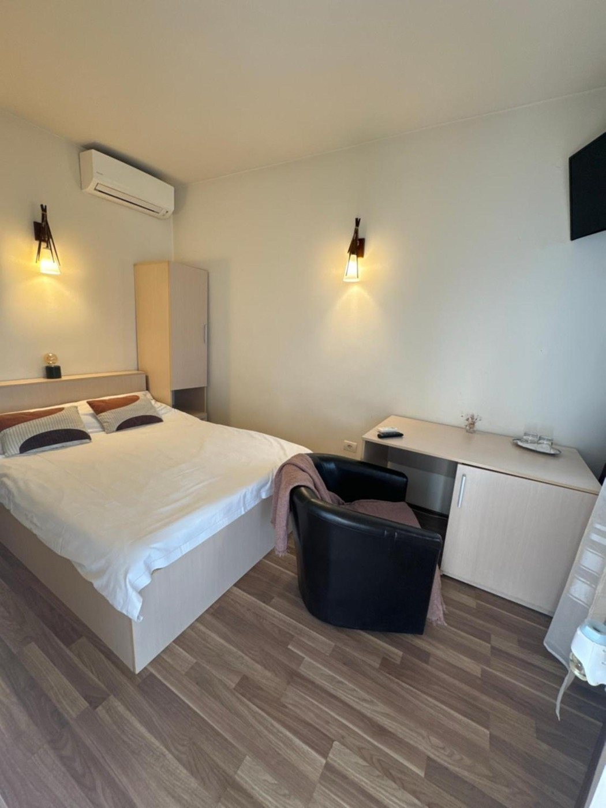
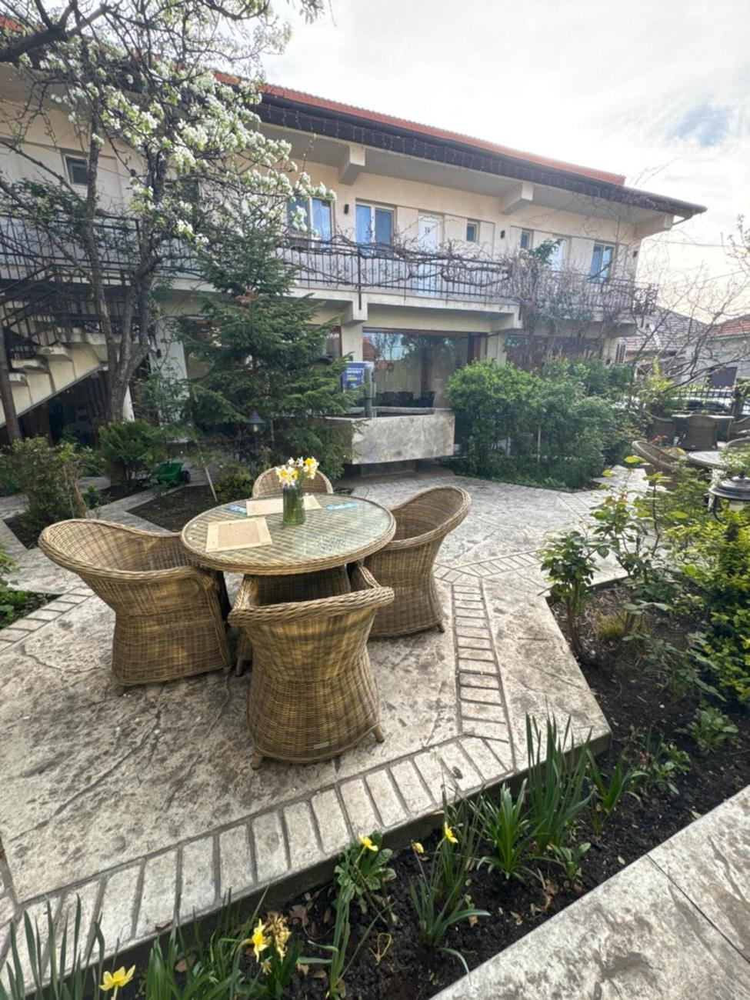
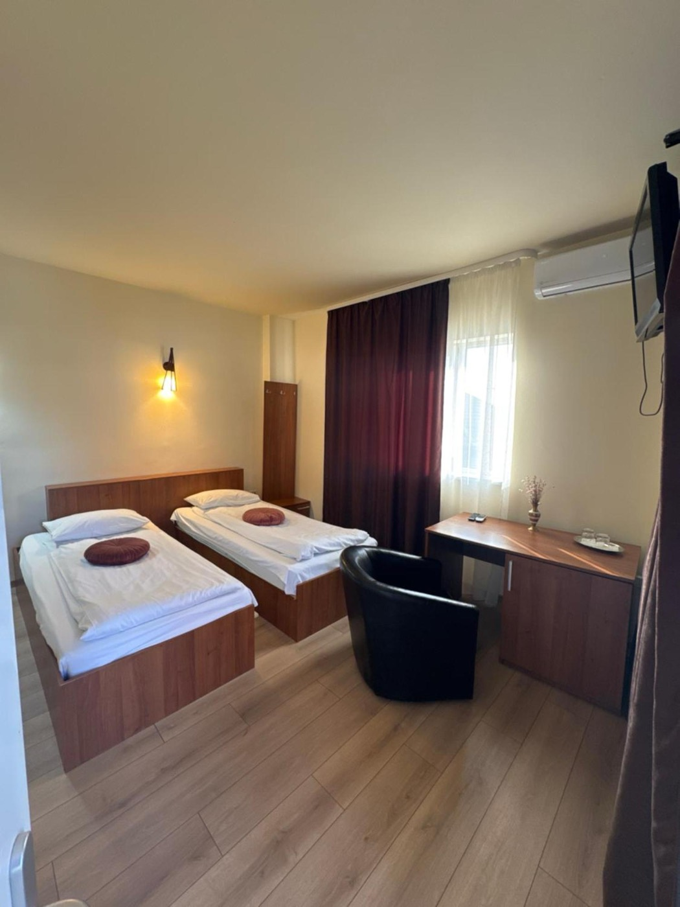
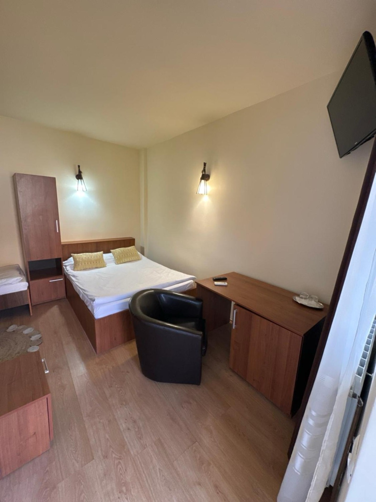
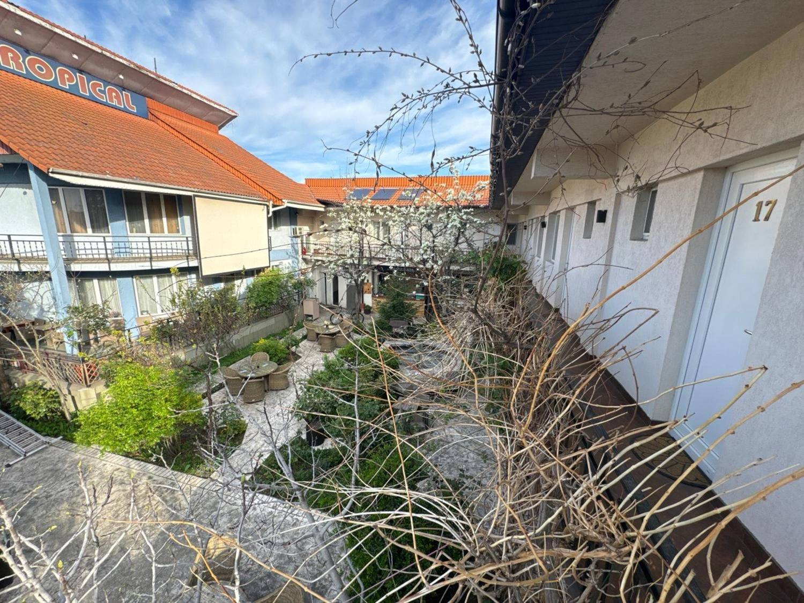
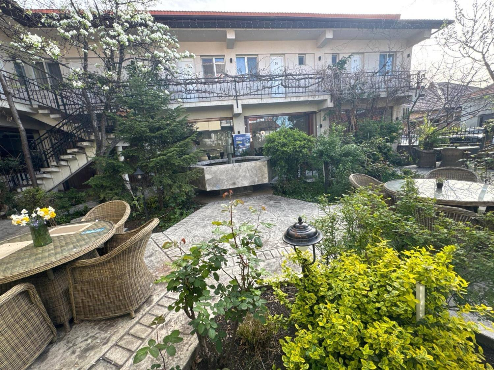
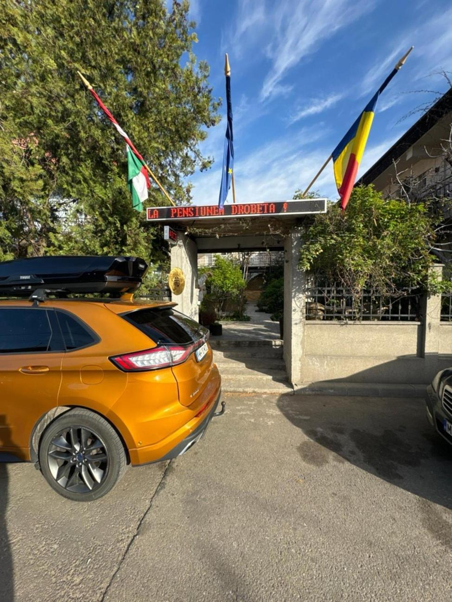
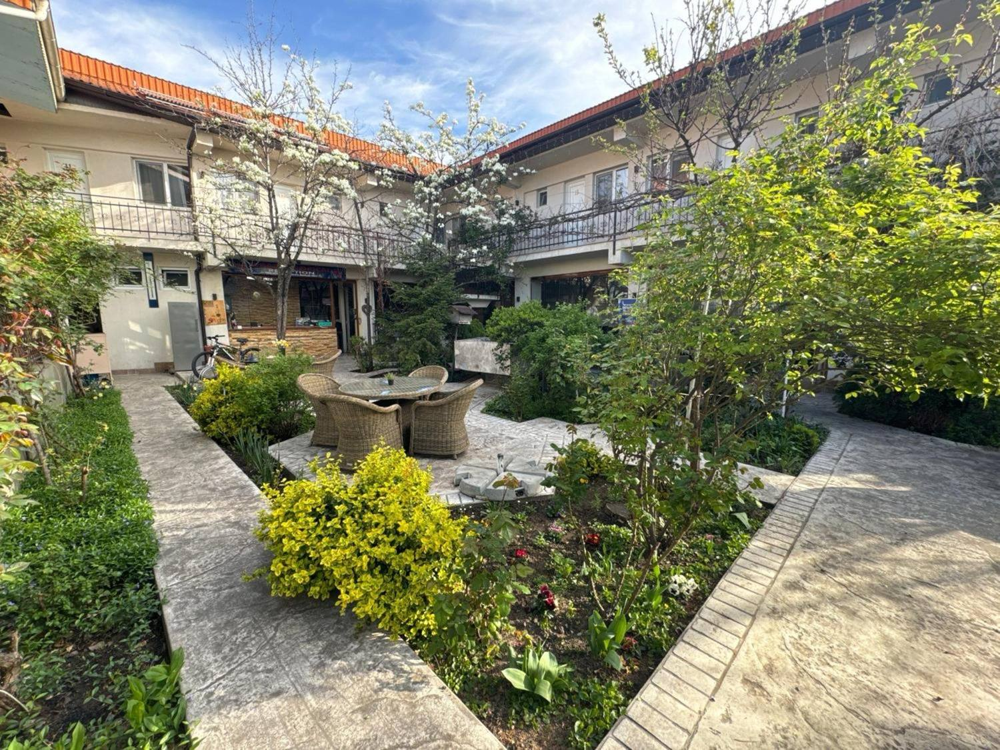
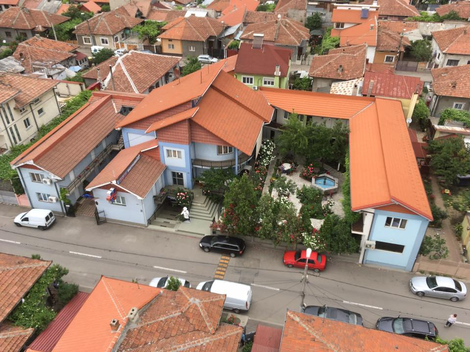

Cameră matrimonială
Confortul de acasă
Pat dublu, aer condiționat și un colț de birou, într-un decor cald, în nuanțe de lemn.
Baie proprieAer condiționatTVWiFi
Camere primitoare așezate în jurul unei curți interioare cu trandafiri și fântână arteziană, cu Restaurantul Tropical-Terasă chiar lângă recepție. În zona de nord-vest a orașului, la un pas de Severin Shopping Center.
O curte interioară cu trandafiri și fântână, înconjurată de camere primitoare.
Pensiunea Drobeta se află în zona de nord-vest a orașului Drobeta-Turnu Severin, în apropierea centrului comercial Severin Shopping Center. Accesul se face pe la intrarea cu steaguri, iar recepția funcționează în terasa de vară — un colț liniștit, la câțiva pași de forfota orașului.
Camerele sunt așezate în jurul unei grădini interioare îngrijite, cu alei de piatră, flori și o fântână arteziană. Toate au baie proprie, aer condiționat, televizor și WiFi gratuit, iar oaspeții au la dispoziție parcare privată și micul dejun inclus. Sub același acoperiș veți găsi și Restaurantul Tropical-Terasă.

Tot ce ai nevoie pentru un sejur comod în Severin — de la micul dejun inclus la parcarea gratuită.
Internet wireless gratuit în camere și în spațiile comune ale pensiunii.
Parcare privată gratuită la fața locului, în incinta pensiunii.
Camere climatizate, cu televizor și baie proprie, curate și îngrijite.
Micul dejun este servit oaspeților, iar Restaurantul Tropical funcționează în incintă.
Curte interioară cu trandafiri, alei de piatră și o fântână arteziană.
Recepția funcționează în terasa de vară; accesul se face pe la intrarea cu steaguri.
Camere îngrijite, cu mobilier din lemn și lumină caldă, fiecare cu baie proprie, aer condiționat, televizor și WiFi. Curățenie asigurată zilnic.

Pat dublu, aer condiționat și un colț de birou, într-un decor cald, în nuanțe de lemn.

Cameră cu două paturi separate, potrivită pentru prieteni sau colegi de drum.

Cameră mai spațioasă, cu pat dublu și pat suplimentar, ideală pentru familii.



Restaurantul din terasă te așteaptă cu preparate românești de casă și un meniu al zilei consistent. Pe lângă mesele servite în grădină, bucătăria pregătește zilnic un meniu la pachet, cu livrare gratuită în oraș.
Grădina, camerele și curtea interioară — imagini reale din pensiune.


Câteva dintre aprecierile lăsate de oaspeți după sejur.
„O locație extraordinară cu oameni extraordinari, un loc unde aș mai veni și a doua oară.”
„Excepțional — exact ce ne doream. Ne-am simțit foarte bine și recomandăm cu drag.”
„Superb. Cazare curată, gazde primitoare și o grădină care te face să mai stai.”
Sună-ne pentru disponibilitate, tarife sau o masă la Restaurantul Tropical. Îți răspundem cu drag.
Strada Ion Luca Caragiale 39, Drobeta-Turnu Severin — în zona de nord-vest, lângă Severin Shopping Center.